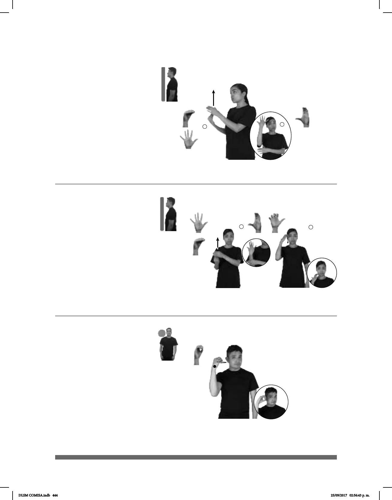

444
Nuevo, va (O-49)
Seña: SB
: MD seña que pasa
de O.5 a 5.1, MB C.3
MD y MB palmas
hacia adentro.
MD del pecho a la
cabeza. MB a la altura del pecho
del lado derecho.
Movimiento: MD recto.
adj. Que tiene poco
tiempo o acaba de ser hecho o
fabricado.
pos-TU FIESTA NUEVO VESTIDO pro-YO USAR
1
2
Seña: SC: I. SB; II. SM
I. MD seña que pasa
de O.5 a 5.1, MB C.3; II. 5.13
I. MD y MB palmas
hacia adentro; II. Palma oblicua hacia
la izquierda y hacia abajo.
I. MD del pecho a la
cabeza. MB a la altura del pecho del
lado derecho; II. La mano inicia sobre
la sien y se desliza hacia la barbilla.
Movimiento: I. MD recto; II. Recto.
Estado perteneciente a los
Estados Unidos Mexicanos ubicado al
noreste del país.
(O-50)
YA dm-PEPÉ VACACIONES NUEVO-LEÓN YA IR
Pepe fue de vacaciones a Nuevo León.
Seña: SM
O.1
La palma inicia hacia
adentro y termina hacia afuera.
A la altura de la cara.
Movimiento: El antebrazo gira y
cambia la orientación de la mano,
pasa de mostrar el dorso a mostrar
la palma.
Capital del estado
Oaxaca pertenciente a los Estados
Unidos Mexicanos.
OAXACA ARTESANÍAS HABER
allá
En Oaxaca hay artesanías.
Oaxaca, Oaxaca (O-51)
DLSM COMISA.indb 444 25/09/2017 02:56:43 p. m.